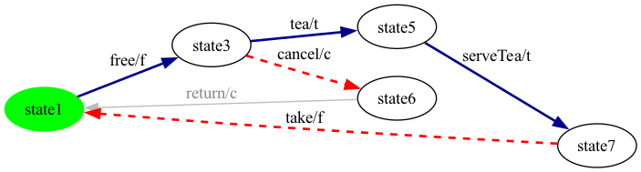
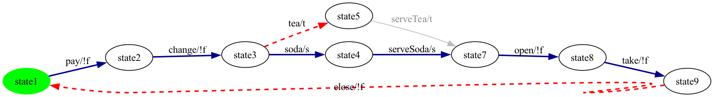
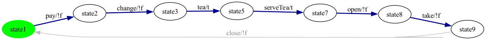
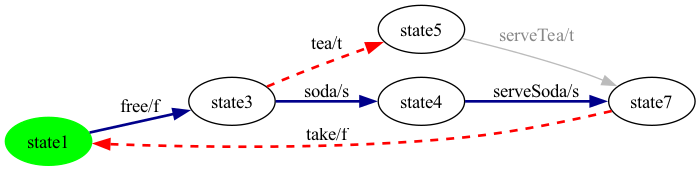
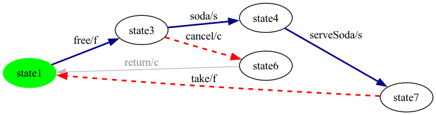
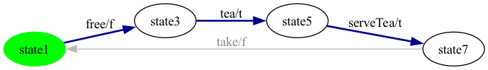
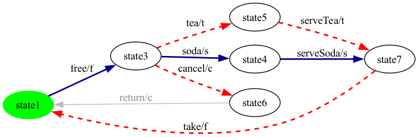
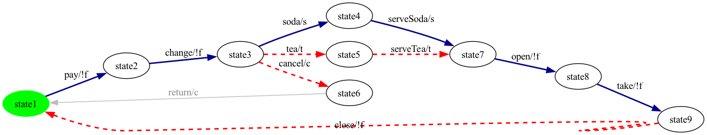
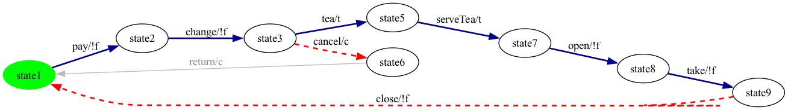
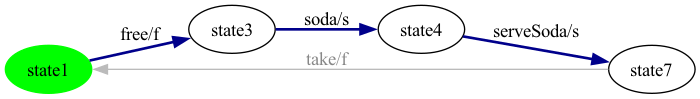

FExpressionPreservingProjection.project keeps every transition whose feature expression evaluates true under the configuration; a forward BFS then drops states unreachable from the initial.InitialSccFilter.keepInitialScc isolates the SCC containing the initial state.ShortestPaths.shortestPathToAny runs a BFS from the current state to the nearest state still uncovered, and the resulting path is appended to the walk. Intermediate states along the path are also marked visited.TestCase, then TestCaseSplitter.splitAtInitialReturns splits the walk at every visit to the initial state for display.Coverage claim: step 5 terminates iff every state is visited; strong connectivity guarantees termination. State coverage is therefore 100% on the repaired FTS by construction. The walk is typically shorter than an all-transitions Euler cycle (lower-bound |V|-1 vs |E|) but exercises fewer edges — the fundamental RQ3 trade-off.
Each product below shows the repaired FTS with the state-coverage walk overlaid: darkblue bold transitions are picked by the greedy phase; red dashed transitions are picked by the BFS-reroute phase; grey transitions are not in the walk. Test cases below are obtained by splitting the walk at every visit to the initial state.
Selected features: selected = {c, f, t}
Repaired FTS: 5 states, 6 transitions (6 real / 0 __end__).
State-coverage walk: 6 transition step(s) — 3 unique greedy edge(s), 1 BFS-reroute segment(s). State coverage on the repaired FTS: 5/5 = 100.0%.

Generated test cases (2 trip(s) from initial back to initial, hidden synthetics removed):
free → tea → serveTea → takefree → cancelSelected features: selected = {s, t}
Repaired FTS: 8 states, 9 transitions (9 real / 0 __end__).
State-coverage walk: 10 transition step(s) — 6 unique greedy edge(s), 1 BFS-reroute segment(s). State coverage on the repaired FTS: 8/8 = 100.0%.

Generated test cases (2 trip(s) from initial back to initial, hidden synthetics removed):
pay → change → soda → serveSoda → open → take → closepay → change → teaSelected features: selected = {s}
Repaired FTS: 7 states, 7 transitions (7 real / 0 __end__).
State-coverage walk: 6 transition step(s) — 6 unique greedy edge(s), 0 BFS-reroute segment(s). State coverage on the repaired FTS: 7/7 = 100.0%.
Generated test cases (1 trip(s) from initial back to initial, hidden synthetics removed):
pay → change → soda → serveSoda → open → takeSelected features: selected = {t}
Repaired FTS: 7 states, 7 transitions (7 real / 0 __end__).
State-coverage walk: 6 transition step(s) — 6 unique greedy edge(s), 0 BFS-reroute segment(s). State coverage on the repaired FTS: 7/7 = 100.0%.

Generated test cases (1 trip(s) from initial back to initial, hidden synthetics removed):
pay → change → tea → serveTea → open → takeSelected features: selected = {f, s, t}
Repaired FTS: 5 states, 6 transitions (6 real / 0 __end__).
State-coverage walk: 6 transition step(s) — 3 unique greedy edge(s), 1 BFS-reroute segment(s). State coverage on the repaired FTS: 5/5 = 100.0%.

Generated test cases (2 trip(s) from initial back to initial, hidden synthetics removed):
free → soda → serveSoda → takefree → teaSelected features: selected = {c, f, s}
Repaired FTS: 5 states, 6 transitions (6 real / 0 __end__).
State-coverage walk: 6 transition step(s) — 3 unique greedy edge(s), 1 BFS-reroute segment(s). State coverage on the repaired FTS: 5/5 = 100.0%.

Generated test cases (2 trip(s) from initial back to initial, hidden synthetics removed):
free → soda → serveSoda → takefree → cancelSelected features: selected = {c, s}
Repaired FTS: 8 states, 9 transitions (9 real / 0 __end__).
State-coverage walk: 10 transition step(s) — 6 unique greedy edge(s), 1 BFS-reroute segment(s). State coverage on the repaired FTS: 8/8 = 100.0%.
Generated test cases (2 trip(s) from initial back to initial, hidden synthetics removed):
pay → change → soda → serveSoda → open → take → closepay → change → cancelSelected features: selected = {f, t}
Repaired FTS: 4 states, 4 transitions (4 real / 0 __end__).
State-coverage walk: 3 transition step(s) — 3 unique greedy edge(s), 0 BFS-reroute segment(s). State coverage on the repaired FTS: 4/4 = 100.0%.

Generated test cases (1 trip(s) from initial back to initial, hidden synthetics removed):
free → tea → serveTeaSelected features: selected = {c, f, s, t}
Repaired FTS: 6 states, 8 transitions (8 real / 0 __end__).
State-coverage walk: 10 transition step(s) — 3 unique greedy edge(s), 2 BFS-reroute segment(s). State coverage on the repaired FTS: 6/6 = 100.0%.

Generated test cases (3 trip(s) from initial back to initial, hidden synthetics removed):
free → soda → serveSoda → takefree → tea → serveTea → takefree → cancelSelected features: selected = {c, s, t}
Repaired FTS: 9 states, 11 transitions (11 real / 0 __end__).
State-coverage walk: 17 transition step(s) — 6 unique greedy edge(s), 2 BFS-reroute segment(s). State coverage on the repaired FTS: 9/9 = 100.0%.

Generated test cases (3 trip(s) from initial back to initial, hidden synthetics removed):
pay → change → soda → serveSoda → open → take → closepay → change → tea → serveTea → open → take → closepay → change → cancelSelected features: selected = {c, t}
Repaired FTS: 8 states, 9 transitions (9 real / 0 __end__).
State-coverage walk: 10 transition step(s) — 6 unique greedy edge(s), 1 BFS-reroute segment(s). State coverage on the repaired FTS: 8/8 = 100.0%.

Generated test cases (2 trip(s) from initial back to initial, hidden synthetics removed):
pay → change → tea → serveTea → open → take → closepay → change → cancelSelected features: selected = {f, s}
Repaired FTS: 4 states, 4 transitions (4 real / 0 __end__).
State-coverage walk: 3 transition step(s) — 3 unique greedy edge(s), 0 BFS-reroute segment(s). State coverage on the repaired FTS: 4/4 = 100.0%.

Generated test cases (1 trip(s) from initial back to initial, hidden synthetics removed):
free → soda → serveSodaTotal products: 12.